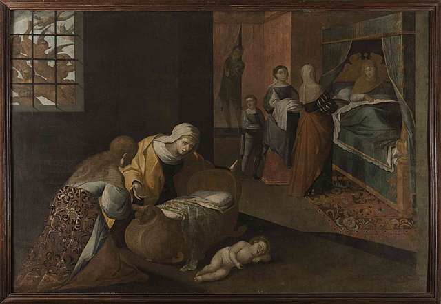
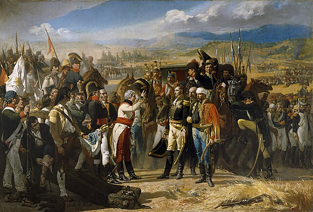
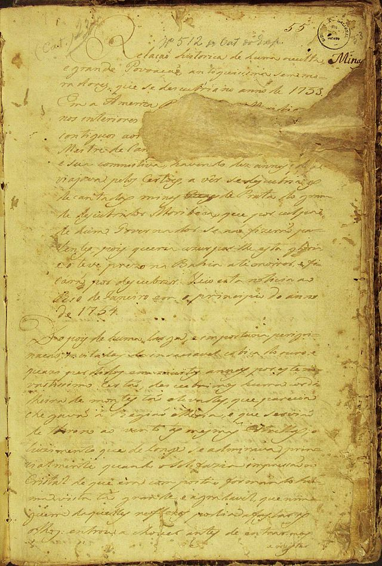
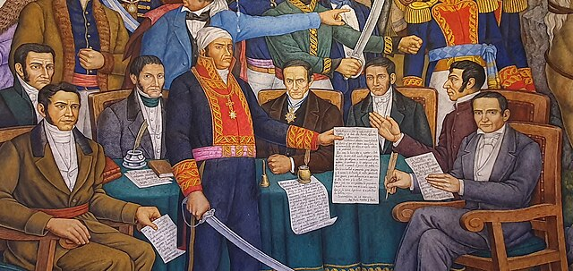
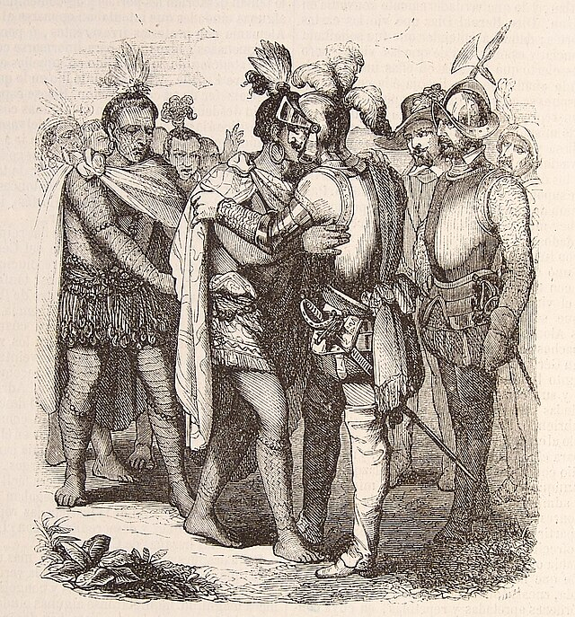

⟵
Independencia de México
Antecedentes Históricos
Causas de la Independencia

Etapas del Movimiento
Personajes Clave
Batallas y Conflictos

Documentos y Declaraciones

Consecuencias de la Independencia

Lugares Históricos Importantes
Línea del Tiempo
Participación de la Sociedad
